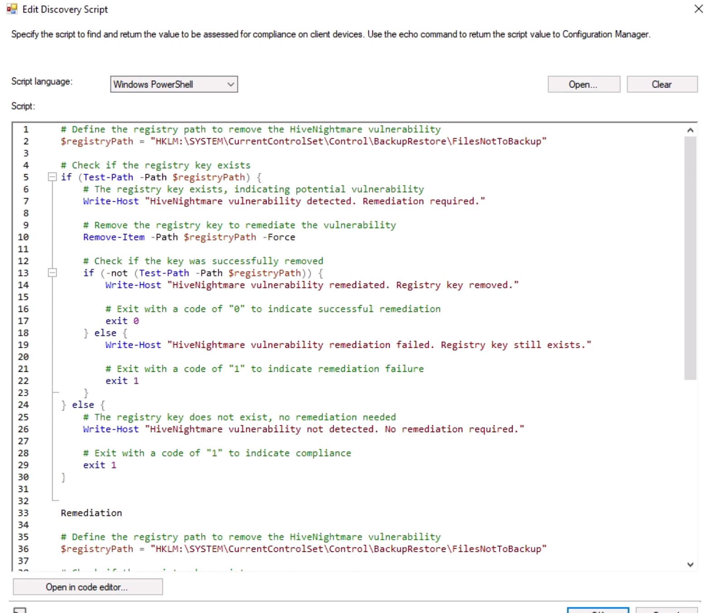
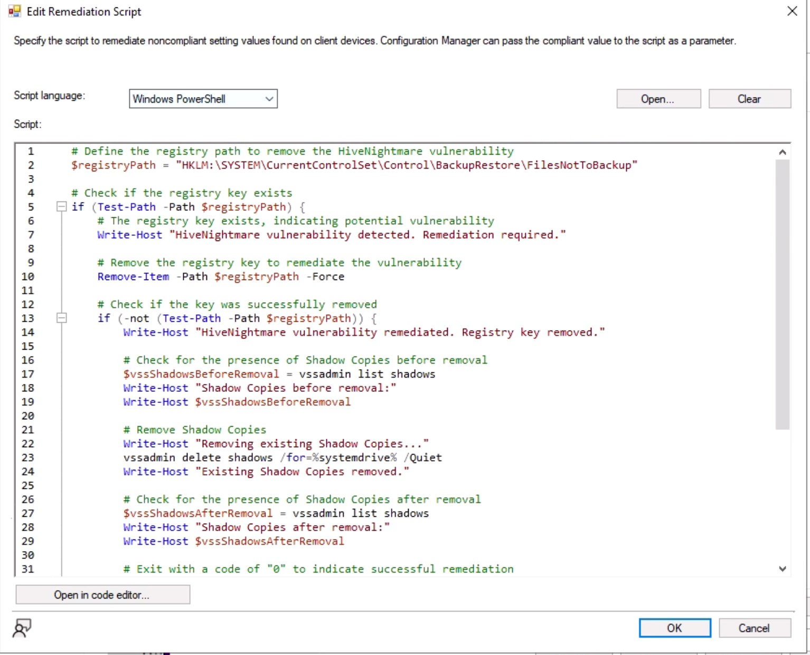

Project Manager - SCCM Software Implementation
Online April 2023Arizona State University
- Led a team in a comprehensive group project focused on utilizing SCCM software, demonstrating effective project management skills.
- Coordinated team efforts, ensuring seamless collaboration, and successful achievement of project milestones.
- Assumed the role of Project Manager, overseeing task delegation, timeline adherence, and facilitating clear communication among team members.
- Enhanced understanding of project management principles, emphasizing successful collaboration to achieve common goals.
- Applied skills in task delegation and timeline management to contribute to the project's success.
- Developed the ability to lead and motivate a team towards a shared objective, fostering a collaborative and efficient working environment.
PrintNightmare Vulnerability Project
For this specific project, we addressed the PrintNightmare vulnerability, a security concern known for its potential remote code execution. Our tasks included:
- Creating a Configuration Item for detection, checking registry keys, and values to identify the vulnerability.
- Developing remediation logic to automatically fix non-compliant systems by adjusting necessary registry settings.
- Deploying the Configuration Baseline, monitoring compliance status, and conducting rigorous testing to verify effectiveness.
Code Snippet - Configuration Item for PrintNightmare
Detection
# Specify the registry path and value to check
$registryPath = "HKLM:\SYSTEM\CurrentControlSet\Services\PrintSpooler"
$registryValueName = "RestrictDriverInstallationToAdministrators"
# Check if the registry value exists
if (Test-Path -Path $registryPath) {
$registryValue = Get-ItemProperty -Path $registryPath -Name $registryValueName
# Check the value data
if ($registryValue.$registryValueName -eq 0) {
# Vulnerability detected (non-compliant)
Write-Host "PrintNightmare vulnerability detected: Registry value is 0"
exit 0
} else {
# System is compliant
Write-Host "System is compliant: Registry value is not 0"
exit 1
}
} else {
# Registry key not found (compliant)
Write-Host "Registry key not found: System is compliant"
exit 1
}
Remediation:
# Define the registry key path and value name
for PrintNightmare
$registryPath = "HKLM:\SOFTWARE\Policies\Microsoft\Windows NT\Printers\PointAndPrint"
$valueName = "RestrictDriverInstallationToAdministrators"
# Check
if the registry key exists
if (Test - Path - Path $registryPath) {
# Check the current value of the registry key
$currentValue = (Get - ItemProperty - Path $registryPath).$valueName
# If the value is set to 0(non - compliant), remediate it to 1(compliant)
if ($currentValue - eq 0) {
Set - ItemProperty - Path $registryPath - Name $valueName - Value 1
Write - Host "Remediated PrintNightmare vulnerability. Registry value adjusted to 1."
} else {
Write - Host "System is already compliant. No action needed."
}
} else {
Write - Host "Registry key not found. System is compliant."
}
# Exit with a code to indicate success(0) or compliance(1)
Exit 0
Screenshot - PrintNightmare Configuration Baseline Deployment
HiveNightmare Vulnerability Project
Additionally, we addressed the HiveNightmare vulnerability, focusing on simulation, detection, and remediation. Our tasks included:
- Enabling Shadow Copies for simulation purposes to mimic real-world conditions.
- Creating a Configuration Item involving scripting to detect and remediate the HiveNightmare vulnerability.
- Similar to the PrintNightmare task, deploying the Configuration Baseline, assessing compliance status, and ensuring effective vulnerability resolution.
Code Snippet - Configuration Item for HiveNightmare
Detection
# Define the registry path to check for HiveNightmare vulnerability
$registryPath = "HKLM:\SYSTEM\CurrentControlSet\Control\BackupRestore\FilesNotToBackup"
# Check if the registry key exists
if (Test-Path -Path $registryPath) {
# The registry key exists, indicating potential vulnerability
Write-Host "HiveNightmare vulnerability detected. Registry key exists."
# You can add additional checks or actions here if needed
# Exit with a code of "0" to indicate non-compliance
exit 0
} else {
# The registry key does not exist, system is compliant
Write-Host "HiveNightmare vulnerability not detected. System is compliant."
# Exit with a code of "1" to indicate compliance
exit 1
}
Remediation:
# Define the registry path to remove the HiveNightmare vulnerability
$registryPath = "HKLM:\SYSTEM\CurrentControlSet\Control\BackupRestore\FilesNotToBackup"
# Check if the registry key exists
if (Test-Path -Path $registryPath) {
# The registry key exists, indicating potential vulnerability
Write-Host "HiveNightmare vulnerability detected. Remediation required."
# Remove the registry key to remediate the vulnerability
Remove-Item -Path $registryPath -Force
# Check if the key was successfully removed
if (-not (Test-Path -Path $registryPath)) {
Write-Host "HiveNightmare vulnerability remediated. Registry key removed."
# Check for the presence of Shadow Copies before removal
$vssShadowsBeforeRemoval = vssadmin list shadows
Write-Host "Shadow Copies before removal:"
Write-Host $vssShadowsBeforeRemoval
# Remove Shadow Copies
Write-Host "Removing existing Shadow Copies..."
vssadmin delete shadows /for=%systemdrive% /Quiet
Write-Host "Existing Shadow Copies removed."
# Check for the presence of Shadow Copies after removal
$vssShadowsAfterRemoval = vssadmin list shadows
Write-Host "Shadow Copies after removal:"
Write-Host $vssShadowsAfterRemoval
# Exit with a code of "0" to indicate successful remediation
exit 0
} else {
Write-Host "HiveNightmare vulnerability remediation failed. Registry key still exists."
# Exit with a code of "1" to indicate remediation failure
exit 1
}
} else {
# The registry key does not exist, no remediation needed
Write-Host "HiveNightmare vulnerability not detected. No remediation required."
# Exit with a code of "1" to indicate compliance
exit 1
}
Screenshot - HiveNightmare Configuration Baseline Deployment
Windows Active Directory Project - Creating OU Structure via PowerShell
As part of another project, we worked on creating the OU (Organizational Unit) structure in Windows Active Directory using PowerShell. This involved:
- Designing and implementing the OU structure based on organizational needs.
- Utilizing PowerShell scripts for efficient and automated OU creation.
Code Snippet - PowerShell Script for OU Creation
Creating Structured OUS in accordance to the assignment
New-ADOrganizationalUnit -Name Users -path "ou=Engineering,ou=TheGreenEnergyBatteryCompany,dc=rcollara,dc=local"
New-ADOrganizationalUnit -Name Groups -path "ou=Engineering,ou=TheGreenEnergyBatteryCompany,dc=rcollara,dc=local"
New-ADOrganizationalUnit -Name Computers -path "ou=Engineering,ou=TheGreenEnergyBatteryCompany,dc=rcollara,dc=local"
New-ADOrganizationalUnit -Name Resources -path "ou=Engineering,ou=TheGreenEnergyBatteryCompany,dc=rcollara,dc=local"
New-ADOrganizationalUnit -Name Users -path "ou=RandD,ou=TheGreenEnergyBatteryCompany,dc=rcollara,dc=local"
New-ADOrganizationalUnit -Name Groups -path "ou=RandD,ou=TheGreenEnergyBatteryCompany,dc=rcollara,dc=local"
New-ADOrganizationalUnit -Name Computers -path "ou=RandD,ou=TheGreenEnergyBatteryCompany,dc=rcollara,dc=local"
New-ADOrganizationalUnit -Name Resources -path "ou=RandD,ou=TheGreenEnergyBatteryCompany,dc=rcollara,dc=local"
New-ADOrganizationalUnit -Name Users -path "ou=Business,ou=TheGreenEnergyBatteryCompany,dc=rcollara,dc=local"
New-ADOrganizationalUnit -Name Groups -path "ou=Business,ou=TheGreenEnergyBatteryCompany,dc=rcollara,dc=local"
New-ADOrganizationalUnit -Name Computers -path "ou=Business,ou=TheGreenEnergyBatteryCompany,dc=rcollara,dc=local"
New-ADOrganizationalUnit -Name Resources -path "ou=Business,ou=TheGreenEnergyBatteryCompany,dc=rcollara,dc=local"
New-ADOrganizationalUnit -Name Users -path "ou=Legal,ou=TheGreenEnergyBatteryCompany,dc=rcollara,dc=local"
New-ADOrganizationalUnit -Name Groups -path "ou=Legal,ou=TheGreenEnergyBatteryCompany,dc=rcollara,dc=local"
New-ADOrganizationalUnit -Name Computers -path "ou=Legal,ou=TheGreenEnergyBatteryCompany,dc=rcollara,dc=local"
New-ADOrganizationalUnit -Name Resources -path "ou=Legal,ou=TheGreenEnergyBatteryCompany,dc=rcollara,dc=local"
New-ADOrganizationalUnit -Name Users -path "ou=IT,ou=TheGreenEnergyBatteryCompany,dc=rcollara,dc=local"
New-ADOrganizationalUnit -Name Groups -path "ou=IT,ou=TheGreenEnergyBatteryCompany,dc=rcollara,dc=local"